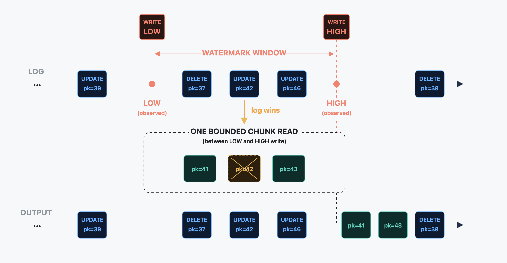

The problem
A downstream system — a search index, a cache, a data warehouse — needs to track every change in a database. To feed it, you need two streams:
- A snapshot: a one-time copy of every row already in the table.
- A change stream: every
INSERT/UPDATE/DELETE, as it happens, read from the database log.
In order to combine these streams, coordination is needed to ensure convergence to the latest state. Typical approaches achieve this by blocking writes at the application layer or with table locks, pausing log-event processing, or letting change events accumulate until the snapshot has completed.
To make things more interesting, a full-state read is usually not only needed initially. It may be needed later too: to backfill a new consumer, repair corrupted downstream state, reload after a restore, or re-read specific primary keys.

The watermark idea
DBLog captures table state through bounded chunk selects and consumes the change stream concurrently, with no source-side locks, while still producing a correct, ordered output.
The trick is two markers written into the source database and appearing in the change stream afterwards:
▼ LW — the low watermark, written to the source before reading a chunk of rows.
▲ HW — the high watermark, written to the source after reading the chunk.
Between LW and HW, DBLog keeps consuming live log events normally. It also reads a bounded chunk of rows from the source — say primary keys 1–100 — and buffers them. When HW comes back from the log, DBLog has a clean picture of every change that happened to the table while the chunk was being read.
The reconciliation rule is one sentence: if a buffered chunk row shares a primary key with any in-window log event, drop the chunk row. The log version is newer, so the buffered copy is stale. The surviving chunk rows are emitted on HW, and the reader's durable position advances.
DBLog in one minute
The cycle for one chunk, start to finish:
- Keep streaming. Consume change stream events.
- Write LW. A low-watermark marker is written to the source DB — the window has begun once DBLog sees it in the change stream.
- Read a chunk. A bounded primary-key range is read from the source and buffered (not yet emitted).
- Write HW. A high-watermark marker is written to the source DB — the window closes once DBLog reads it back from the change stream.
- Let in-window events win. Any log event between LW and HW touching a buffered PK drops the buffered row.
- Emit the survivors. The remaining chunk rows go to the sink, then durable progress advances past HW.

UPDATE for pk=42 arrives from the
log. The chunk's pk=42 is dropped — the log copy is fresher.
The output: every in-window log event in order, plus the surviving
chunk rows (41, 43) emitted on HW.
What this repo gives you
A small Java reference implementation, built from public DBLog material — the original DBLog paper and the Netflix Technology Blog post. Designed for reading and experimentation, not for production.
Executable algorithm
Source-neutral watermark reconciliation, dump orchestration, targeted repair, and checkpoint safety.
Real adapters
MySQL binlog and PostgreSQL pgoutput, with Docker-backed local demos and tests.
Inspection paths
NDJSON, H2 inspector, JDBC apply, no-op sinks, control-plane HTTP, and the Hydroscope tap.